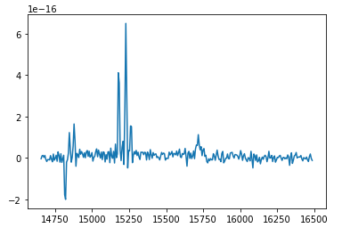

Fit Single Spectrum¶
In this example, we are going to fit a single region of the science verification Abell 426 data cube (found at: https://www.cfht.hawaii.edu/Instruments/Sitelle/SITELLE_sv.php).
We will read in the data as usual using a LUCI cube object. We then will extract a background region and plot it. We will then extract a spectrum from a square region around 1357<x<1367 and 608<y<618. These values were chosen to correspond with the brightest region of the horseshoe. Finally, we use the LuciFit Fit object to fit the region.
# Imports
import sys
sys.path.insert(0, '/media/carterrhea/carterrhea/SIGNALS/LUCI/') # Location of Luci
from LuciBase import Luci
import LUCI.LuciPlotting as lplt
import matplotlib.pyplot as plt
import LUCI.LuciFit as lfit
from astropy.io import fits
import numpy as np
import keras
We now will set the required parameters. We are also going to be using our machine learning algorithm to get the initial guesses.
#Set Parameters
# Using Machine Learning Algorithm for Initial Guess
cube_dir = '/media/carterrhea/carterrhea/Benjamin' # Path to data cube
cube_name = 'A0426_SN3.merged.cm1.1.0' # don't add .hdf5 extension
object_name = 'NGC1275'
redshift = 0.017284 # Redshift of NGC 1275
ML_ref = '/media/carterrhea/carterrhea/SIGNALS/LUCI/ML/Reference-Spectrum-R1800'
ML_model = '/media/carterrhea/carterrhea/SIGNALS/LUCI/ML/R1800-PREDICTOR-I'
We intialize our LUCI object
# Create Luci object
cube = Luci(cube_dir+'/'+cube_name, cube_dir, object_name, redshift, ML_ref, ML_model)
Let’s extract and visualize a background region we defined in ds9:
# Extract and visualize background
bkg_axis, bkg_sky = cube.extract_spectrum_region(cube_dir+'/bkg.reg', mean=True) # We use mean=True to take the mean of the emission in the region instead of the sum
plt.plot(bkg_axis, bkg_sky)
.. image:: example-single-fit-background.png
:alt: Background output
We now extract our region
# Extract and visualize reigon
axis, sky = cube.extract_spectrum(1357, 1367, 608, 618, bkg=bkg_sky, mean=True) # We use mean=True to take the mean of the emission in the region instead of the sum
plt.plot(axis, sky)
The output should look something like this:
We now load the reference spectrum
# Machine Learning Reference Spectrum
ref_spec = fits.open(ML_ref+'.fits')[1].data
channel = []
counts = []
for chan in ref_spec: # Only want SN3 region
channel.append(chan[0])
counts.append(np.real(chan[1]))
min_ = np.argmin(np.abs(np.array(channel)-14700))
max_ = np.argmin(np.abs(np.array(channel)-15600))
wavenumbers_syn = channel[min_:max_]
Finally, we fit!
fit = lfit.Fit(sky, axis, wavenumbers_syn, 'gaussian', ['Halpha'],
keras.models.load_model(ML_model),
Plot_bool = False, bayes_bool=True)
fit_dict = fit.fit()
Now, we plot the result.
plt.plot(axis, sky-bkg_sky, label='background subtracted spectrum')
plt.plot(axis, fit_dict['fit_sol'], label='fit')
plt.legend()